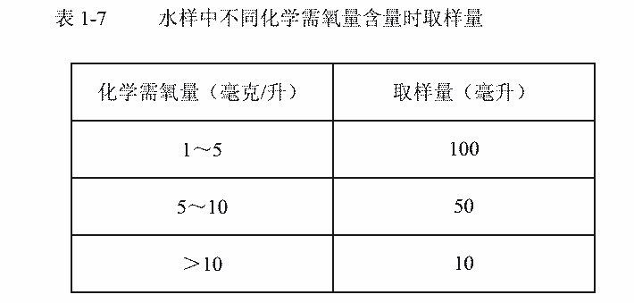
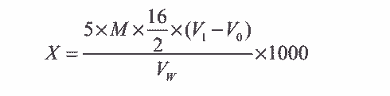

31.化学需氧量的测定
甲 高锰酸钾氧化法
本方法适用于循环冷却水中化学需氧量的测定。
1、原理
高锰酸钾在酸性溶液中将水中的还原性物质氧化，过量的高锰酸钾用草酸盐还原，再用
高锰酸钾标准溶液回滴过量的草酸盐。
MnO4- + 8H+ +5e → Mn2++ 4H2O
2MnO4- + 5CO42-+16H+ → Mn2+ + 8H2O + 10 CO2
2、试剂
2． 1 1+3 硫酸溶液
2． 2 0.0500mol/L 草酸钠标准溶液
称取 3.350g 于 150～200℃温度下烘干的草酸钠，溶于少量水中，于 500mL 容量瓶中稀
释至刻度。
2． 3 0.0050mol/L 草酸钠标准溶液
吸取 50mL0.0500mol/L 草酸钠标准溶液于 500mL 容量瓶中，用水稀释至刻度。
2． 4 0.02mol/L 高锰酸钾溶液
称取高锰酸钾 3.2g 溶于 1000mL 水中，于水浴上微沸 2 小时，放置过夜。用砂蕊漏斗
过滤，贮存于棕色瓶中。
2． 5 0.0020mol/L 高锰酸钾溶液
吸取 50mL0.02moL/L 高锰酸钾标准溶液于 500 mL 容量瓶中，用水稀释至刻度。
2． 6 0.0020mol/L 高锰酸钾溶液的标定
2． 6． 1 取 50mL 水于 250mL 锥形瓶中，加 1+3 硫酸溶液 5mL，移取 0.002mol/L 高
锰酸钾标准溶液 5mL，至出现明显的红色，加热煮沸 5 分钟，应仍保持红色。立即用
0.0050mol/L 草酸钠标准溶液滴定至无色，用 0.002mol/L 高锰酸钾滴定至淡红色，不记
录用量。再取 10mL 草酸钠标准溶液于锥形瓶中，加热至 60～80℃，以待标的高锰酸
钾溶液滴定至出现淡红色为止。
2． 6． 2 计算
高锰酸钾标准溶液的摩尔浓度 M（摩尔/升）， 按下式公式计算：
式中 V1——高锰酸钾标准溶液消耗体积，毫升。
3、仪器
3． 1 玻璃砂蕊漏斗： G4。
3． 2 滴定管：棕色 25mL。
4、分析步骤
4． 1 按表 1-7 取适量水样，于 250mL 锥形瓶中，补加水至 100mL，加 5mL1+3 的硫
酸溶液，加 10mL0.0020mol/L 高锰酸钾标准溶液，加热煮沸 5 分钟，此时应保持红色，立
即准确移入 0.0050mol/L 草酸钠标准溶液 10mL，此时溶液应为无色。
4． 2 溶液保持在 60～80℃（不得低于 60℃）， 用 0.0020mol/L 高锰酸钾标准溶液滴定，
溶液由无色变为淡红色为终点。
4． 3 另取补加量的水于 250mL 锥形瓶中，按 4.1、 4.2 条款进行操作。

5、分析结果的计算
水样中化学需氧量 X（毫克/升）（ 以 O2 表示）， 按下式计算：

式中： M——高锰酸钾标准溶液摩尔浓度，摩尔/升；
16——氧的摩尔质量，克/摩尔；
V1——测水样时高锰酸钾标准溶液回滴过量草酸钠消耗的体积，毫升；
V0——空白试验时高锰酸钾标准溶液回滴过量草酸钠消耗的体积，毫升；
VW——水样体积，毫升。
6、注释
6． 1 试剂应按操作程序加入。
6． 2 煮沸时间应严格控制，必须等水浴沸腾后加入样瓶，保持 30 分钟。
6． 3 平行测定时所有步骤必须控制一样。
6． 4 所取水样体积应使消耗的高锰酸钾在 4～6mL 之间。
6． 5 滴定时水温不低于 60℃。
7、允许差
需氧量在 30～60mg/L 时，平行测定两结果差不大于 1mg/L。
8、结果表示
取平行测定两结果的算术平均值，作为水样的化学需氧量。